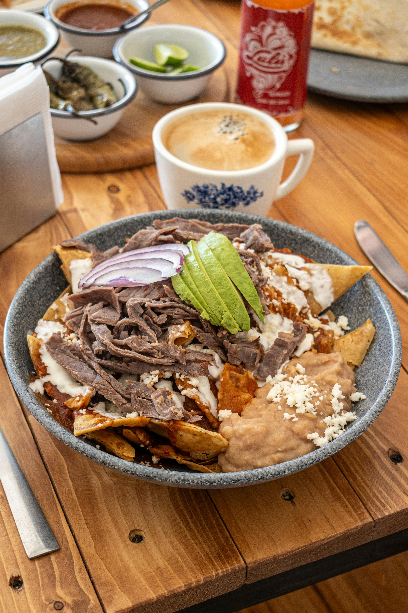

CHILAQUILES
Home

Chilaquiles
This chilaquiles recipe is origined in Guatemala as an alternative to the Mexican chilaquiles
- Tortillas
- Onion & Tomatoes
- Meat
- Guacamole
- Cream
- Lemons
- Lettuce
- Cheese
Steps:
- Chop the onions and tomatoes
- Grill some tortillas with mozzarella cheese and cut them on nachos pieces
- Slice some lettuce
- Put the sliced tortillas on the plate and start putting the lettuce
- Finish putting the cheese and cream above, decorate at your preference
- Enjoy your Chilaquiles!